Platforma noastra web ofera servicii de home-gardening si disponibilitatea de a vinde/cumpara materia prima pentru a putea practica acest hobby; florile. Produsul este destinat persoanelor interesate de gradinarit de acasa ce nu detin multa experienta in domeniu dar doresc sa inceapa in acest domeniu.
Throughout this document, certain conventions are followed to ensure clarity and consistency. These conventions include using standard language, providing descriptive headings, utilizing lists and tables for organization, and incorporating appropriate formatting. In elaborarea acestui proiect au fost respectate mai multe conventii pentru a respecta claritatea si consistenta proiectului. Am folosit pentru partea de FrontEnd limbajele: HTML si CSS, iar in partea de backend a fost acoperita de limbajele: PHP si JavaScript. De asemenea am ales sa respectam acelasi design minimalist pentru butoane cu acelasi efect de hover, cum se poate observa in imaginea de mai jos.
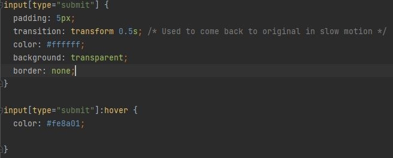Acest document este dezvoltatorilor de produse software ce doresc sa alfe mai multe detalii despre implementarea produsului nostru. Documentul nostru este organizat in 4 capitole principale:
Site-ul Web Gardening ofera optiuni multiple ce pot satisface cerinta gradinarilor. Ofera o interfata usoara cu grafice ce ofera informatii despre plantele ce sunt indexate in baza noastra de date. De asemenea, platforma vine cu un sistem de vanzare/cumparare bine definit si cu un sistem de favorite unde utilizatorii pot urmari plantele ce ii intereseaza pe viitor. O alta functionalitate de baza este elementul de gradina proprie in interiorul site ului, unde utilizatoriu isi poate vedea recolta, o poate uda sau o poate recolta pentru a fi adaugata in depozitul acestuia.
O referinta importanta pentru proiect este diagrama Use-Case, prezenta in imaginea de mai jos.
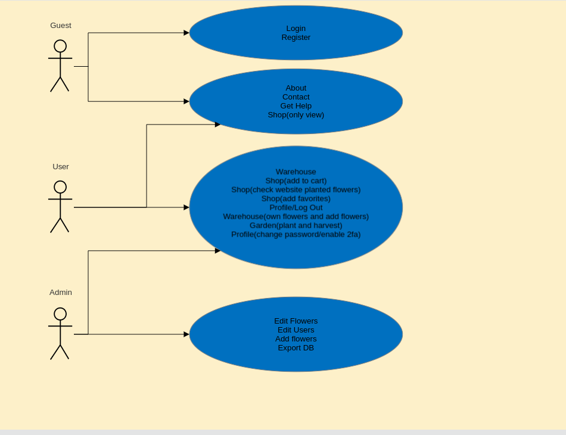The web gardening website is designed as a standalone platform that operates independently of other systems. It provides a comprehensive and user-friendly interface for accessing gardening-related information and tools. Website-ul nostru tintese a fi o platforma standalone, independetna de orice alt sistem, ce vine ca un deschizator de piata pentru zona locala. Componentele principale ale proiectului pot fi observate in diagrama de mai jos:
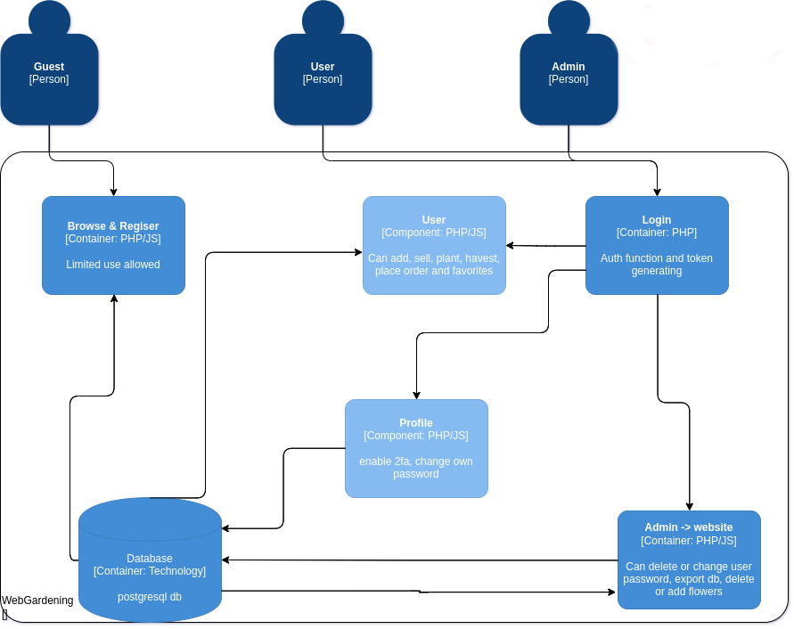The key functions of the web gardening website include:
The web gardening website caters to the following user classes:
Platforma poate opera pe multiple versiuni de OS, independent de acestea si va putea fi accesata de pe orice dispozitiv conectat la internet. Aceste functionalitati sunt posibile datorita integrarii platformei si a bazei de date intr-un virtual machine ce ruleaza Ubuntu.Aceasta masina opereaza din interiorul unui server AWS.
Limitarile de design si construire ale proiectului au fost urmatoarele:
Website-ul contine o pagina de "Get Help" unde sunt listate categoriile principale de care un utilizator nou ar putea fi interesat. In cazul in care utilizatorul nu gaseste informatia pe care o cauta in pagina de Get Help, site-ul detine o pagina de Contact Us unde utilizatorul ne poate trimite un mesaj cu problema.

Intrucat website-ul nostru este independent de alte produse sau servicii software, functionarea lui depinde de stabilitatea masinii virtuale Ubuntu pe care acesta este incarcat. De asemenea, pe viitor, daca se doreste o mai buna implementare a unei formule de detectare a evolutiei plantei, se poate considera integrarea unui API ce pune la dispozitie temperatura exterioara. De asemenea site-ul depinde si de buna functionare a bazei de date, a update-ului ei constant si intretinerii.
Caracteristicile logice ale interfetelor noastre urmeaza un pattern bine stabilit pe care user-ul trebuie sa-l respecte daca doreste sa aiba acces la toate facilitatile site-ului
Logica produsului nostru se bazeaza pe o interogare de baza ce sta la baza disponibilitatii paginilor noastre. Daca user-ul nu este logat acesta are acces doar la sectiunile urmatoare: pagina principala, pagina de login, pagina de register, pagina de get help, pagina de contact us si pagina de buy flowers. Pagina de buy flowers este vizibala pentru ca utilizatorul sa poate vedea florile puse la vanzare, le poate adauga in cosul de cumparaturi dar acesta nu este disponibil intrucat nu detine un cont
Logarea se bazaseaza pe un token generat la fiecare login. Token se sterge la logout iar unul nou va fi creat si salvat in cookie la login.
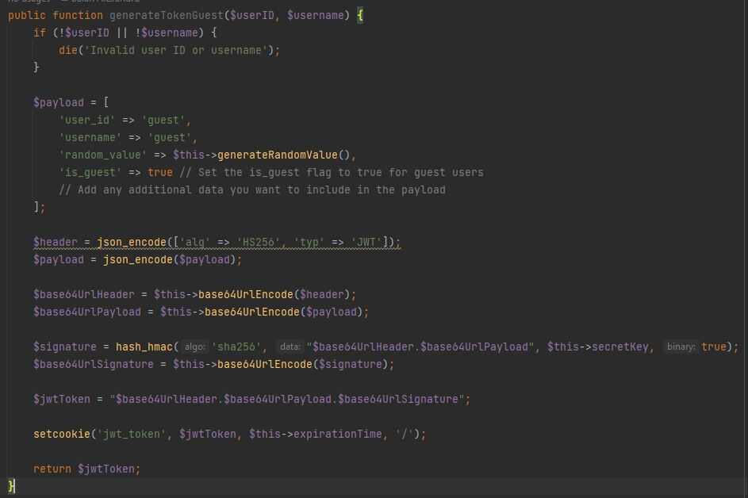Disponibilitatea paginilor in functie de login-ul utilizatorului se realizeaza printr-un script de verificare la inceputul paginii. Daca token-ul exista pagina este disponibila, daca nu, se face trimiterea automata catre pagina principala.
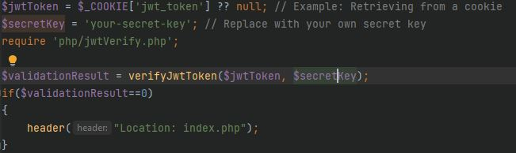In momentul in care un utilizator se inregistreaza, un nou cont este adaugat in baza de date iar acesta se poate loga. Pentru fiecare cont inregistrat exista o coloana in baza de date numita fa_active ce ii permite utilizatorului sa isi seteze two factor authenticator.
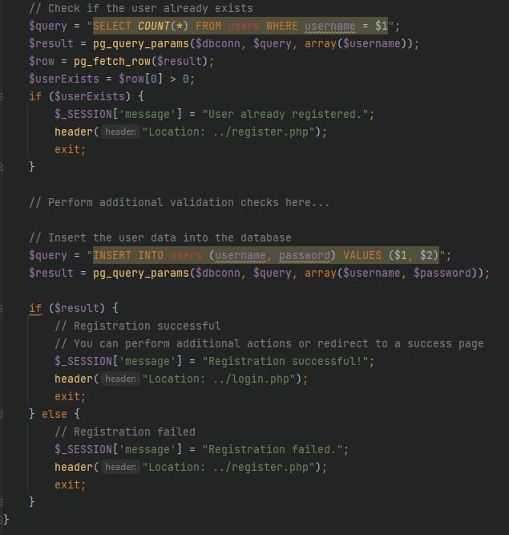In momentul verificarii two factor authenticater-ului, functia verifyCode() verifica validatiea secret-key-ului asociat contului. Daca aceasta este valida, din ea se va genera un cod de 6 cifre. Daca input-ul utilizatorului este egal cu codul generat, check-ul este valid si utilizatorul se logheaza.
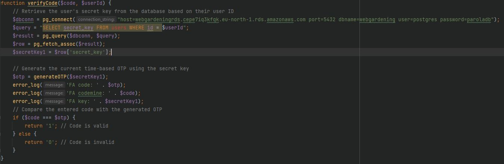Un utilizator logat are acces la urmatoarele functionalitati:
Pagina prezinta 2 aspecte generale: sectiunea de flori la vanzare si o sectiune unde sunt disponibile florile ce sunt in crestere la ceilalti useri Acesta poate adauga flori in cart, poate scoate flori din cart si poate sa finalizeze o comanda in sectiunea checkout. Sectiunea de cumparare este strans in legatura cu listele cart si follow ce sunt prezente in dreapta sun a paginii.
Aceasta functionalitate se gaseste in pagina Warehouse unde utilizatorul isi poate vedea florile detinute. Acestea pot fi puse la vanzare prin apasarea butonului buy. In momentul apasari, florile vor fi considerate scoase la vanzare si vor fi prezente in sectiunea de buy.
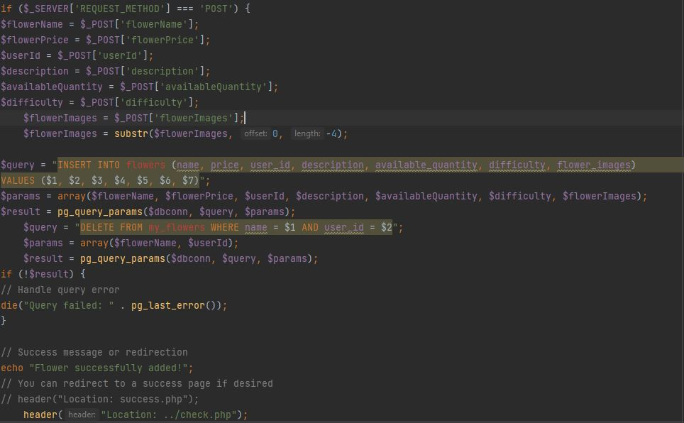In pagina de Shop, utilizatorul poate vedea florile ce sunt in crestere la alti useri si le poate adauga la favorite. Acestea vor fi vizibile in lista de favorite.
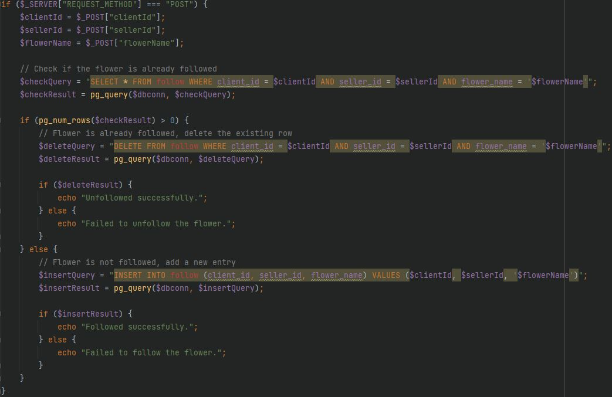Utilizatorul isi poate verifica florile detinute. De asemenea, acesta poate sa le ude, in functie de umiditatea afisata. Fiecare floare are umiditate proprie. Aceasta umiditate scade dupa o formula definita.
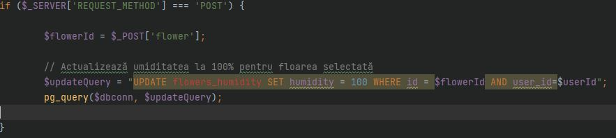Platforma functioneaza independent, pe o configuratie hardware standard, si nu are nevoie de instrumente hardware de specialitate pentru a rula.
Website-ul prezinta un API independent creat, ce realizeaza conexiunea la baza de date si se ocupa cu fetch-ul de date din aceasta. API-ul actioneaza ca un controller pentru interogarile ce se executa.
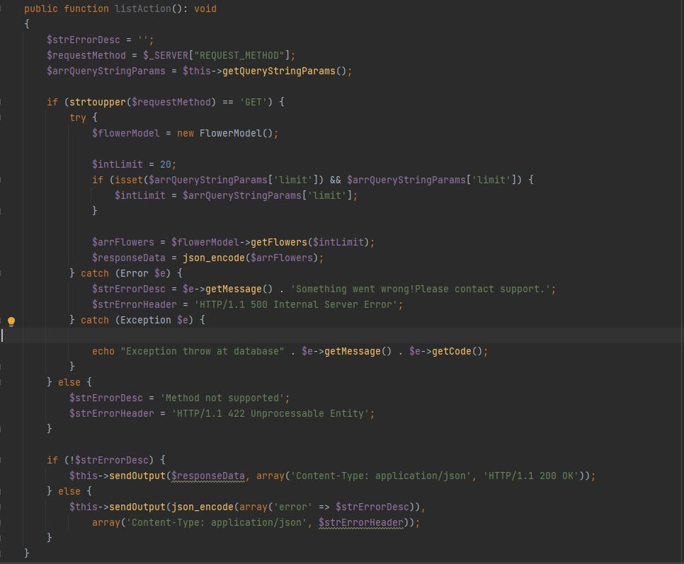De asemenea, platforma realizeaza si conexiuni directe la baza de date, luandu-si informatii in functie de interogarile specificate.
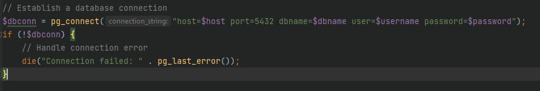The creators of this website are:
Nota: Acesta a fost un proiect de echipa. Fiecare functionalitate de FrontEnd si BackEnd a fost construita in colaborare cu toti membrii echipei.